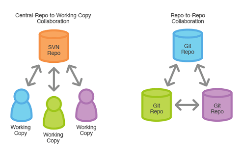
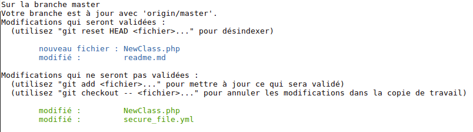

par Benjamin DIELEMAN
décembre 2019


Le versioning (Rapidement 🏃)
1. Historique des modifications (application, présentation)
- ➔ Quoi / Qui / Quand / Pourquoi ?
- ➔ Annuler
2. Travail en équipe
- ➔ Ne pas écraser le travail
- ➔ Suivre l'historique
- ➔ Partager
Qu'est-ce que GIT ?
- Créé en 2005 par Linus Torvald
- Objectifs : palier aux défauts des autres outils
- ➔ Performant (rapide et puissant)
- ➔ Distribué (≠ SVN)
- ➔ Support travail non linéaire (branches)
Pourquoi vous avez besoin de GIT dans votre vie ?
1. Peu importe votre métier : vous allez le rencontrer
- ➔ Développement / Scripting
- ➔ Administration (Gitlab, serveurs prod...)
- ➔ Déploiement
2. Utilisé partout 🌏
3. Amazing / Incredible
- ➔ Commits locaux (tester, sauvegarder, tester...)
- ➔ Une branche par fonctionnalité
- ➔ Un historique clair et soigné 👌
Harder, Better, Faster, Stronger
Objectifs de cette formation
- Présenter la philosophie de GIT
- Des clés pour commencer
- Initialiser les bonnes pratiques
Brace yourselves
I. Un peu de théorie
1. Modèle distribué
Fonctionnement avec un repo central (Gitlab)

2. Les zones de travail en local

- Working directory : Fichiers modifiés (dans éditeur)
- Staging area : Index prêt à faire parti du prochain commit
- Git repository : Base de données des commits
2. Les zones de travail en local

3. Statut
git status
État actuel du 'staging' (bleu) et du 'working directory' (vert)

# Commits dans le 'Git repository'
git log
# Interface + sympa
tig
# Personnalisable à souhait
git log --name-status --graph --oneline --decorate --all --pretty=format:"%C(yellow)%h\\ %Cblue%ad%Cred%d\\ %C(cyan)%<(50,trunc)%s%Cblue\\ [%cn]" --date=short
4. Les commits
5. Les branches (en bref)
II. En pratique
1. Configurer son profil git
2. Initialiser un dépôt
3. Premières modifications
4. Partager son travail
Sources
- Fortement inspiré par le blog : https://www.miximum.fr/
- Tutoriel (en) de bonne qualité : https://www.atlassian.com/git
- Documentation officielle : https://git-scm.com/doc
- Cheat : https://www.atlassian.com/git/tutorials/atlassian-git-cheatsheet
- Cette formation : https://github.com/benito103e/reactjs-formation-git-iut